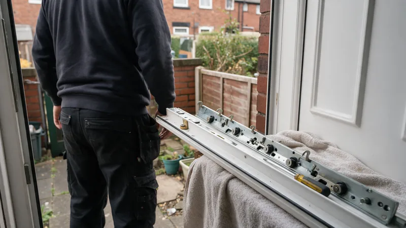

Home / Services / uPVC door lock and mechanism repairs
uPVC door lock and mechanism repairs
uPVC door lock and mechanism repairs.
The door you have to lift, lean on and swear at before it locks. Nearly always the gearbox, the alignment or the cylinder, and nearly always a repair rather than a new door.
Why they stop locking
A uPVC door locks by lifting the handle, which drives a gearbox in the middle of the edge of the door, which throws a set of hooks and rollers up and down into keeps in the frame. When any one of those is out, the door stops locking, and the symptom you notice is nearly always the same: the handle gets harder to lift.
That is worth knowing because it gives you a warning. Months of warning, usually. The forcing is what breaks the gearbox, so a door that needs a bit of a lift in the spring is a door that will not lock at all by the autumn if nobody looks at it.
What is behind the door skin
Repair, not replace
Door firms are not always wrong when they say a door needs replacing, but they are wrong more often than they are right on this one. The parts in that list are parts. They can be bought, they can be fitted, and the door and frame stay where they are. A gearbox change is a morning. A new door is a week and a different conversation.
The thing we would ask you to do today
Lock the door, and notice how much effort it takes to lift the handle. If you are putting any weight into it, or if you have learned to pull the door towards you to get it to go, ring somebody while it is still a job you can book rather than an emergency you cannot avoid.

Generated photoGenerated for this demo. Not a photograph of a real job.
On the day
How this one usually goes.
- Lock it with you watchingWe get you to lock the door the way you normally do, because how you do it tells us more than the door does.
- Check the hooks against the keepsLooking for the shiny marks where metal has been catching metal. That shows a dropped door before any tool comes out.
- Hinges and keeps firstIf it is alignment, hinge adjustment and moving the keeps a couple of millimetres can be the whole repair. Cheapest first.
- Gearbox out if the gearbox has goneStrip removed, gearbox measured and matched, new one in. Same door, same frame, same handles if they are sound.
- Lock and unlock it twenty timesWith the key and with the handle, from inside and outside. A door that works once is not a door that is fixed.
A sample running order for this demo. Yours depends on what is on the door.
Questions
Asked about this job.
My uPVC door will not lock. Can you fix it?
Almost certainly, and almost certainly without a new door. It will be the gearbox, the alignment or the cylinder.
Tell us on the phone whether the handle still lifts, whether the key turns, and whether anything happens when it does. That usually tells us which of the three it is before we set off, so we bring the right part.
I have to lift the handle really hard. Is that bad?
It is the warning light for this kind of door. A hard handle means the hooks are not meeting the keeps cleanly, so you are forcing the gearbox to do the work the alignment should be doing.
Gearboxes give up under that. Getting the door adjusted while it is still a hard lift is a cheap job. Getting it sorted after the gearbox snaps, with the door locked shut and you on the wrong side of it, is not.
The handle has gone floppy and does nothing.
That is usually the gearbox, sometimes the spindle between the handles. If the handle is slack and the door is currently open, keep it open and ring somebody, because the next thing that often happens is it shuts and nobody can get it to unlock.
If it is shut and you are inside, do not keep working it in the hope it catches.
Is it worth doing in winter?
It is the sensible time, yes. uPVC and the frame around it move with the temperature, so a door that was fine in July can be stiff in January and the other way round.
If a door only misbehaves in the cold, that is still worth adjusting out. A door that only locks in the summer is a door that is not locked for half the year.
General trade knowledge written for this demo, not advice on your door.
Our work
Sample jobs like this.
 Generated photoGearbox out, door locking againUrmston · sample
Generated photoGearbox out, door locking againUrmston · sample Generated photoHandle that had stopped liftingSale · sample
Generated photoHandle that had stopped liftingSale · sample Generated photoHandle set and cylinder changedEccles · sample
Generated photoHandle set and cylinder changedEccles · sample Generated photoCylinders changed on moving daySwinton · sample
Generated photoCylinders changed on moving daySwinton · sampleMade up samples with generated pictures. Tap one for the detail.
Also
The other things we do.
Emergency lockouts
Shut out of your own house, keys lost or snapped off in the lock. Opened without damage wherever we can, and a straight word first if we cannot.
More →Lock changes and upgrades
New cylinders, new mortice locks, new keys. The usual reasons are moving in, losing a set, or a lock that has got stiff enough to worry you.
More →Lock repairs after a break in
Secure tonight first, then put right properly: the lock, the keeps, the frame. Boarding up where a door or window will not shut.
More →Window locks
Key operated window locks, handles and the strips inside the frame. The cheapest part of a house to secure and the one most often left.
More →Safes and key cutting
Keys cut from a blank while you wait, and domestic safes fitted where they are actually worth having. Where it goes matters more than the safe.
More →Shall we come and look?
Tell us which door it is and your postcode and we will book someone in. If you are locked out right now, use the urgent line instead.